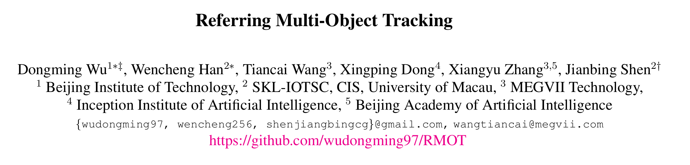
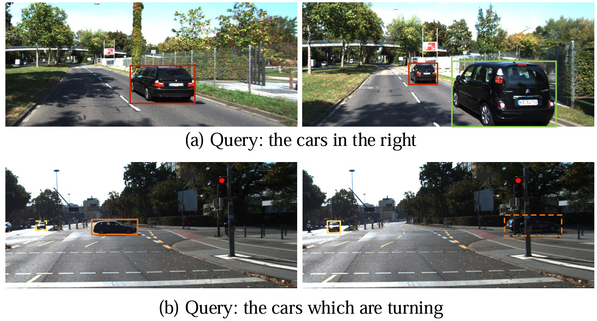
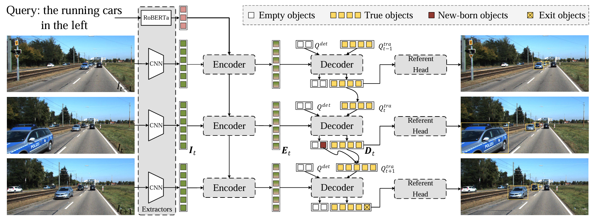
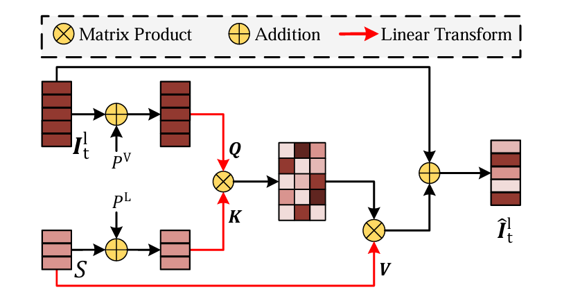
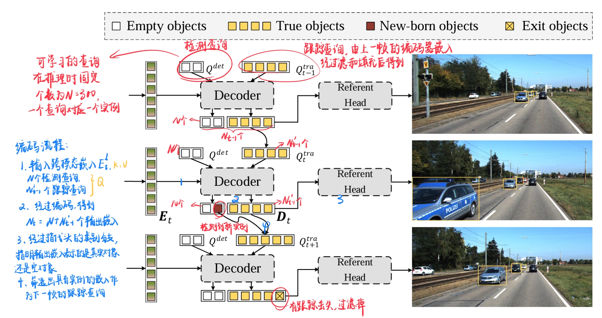
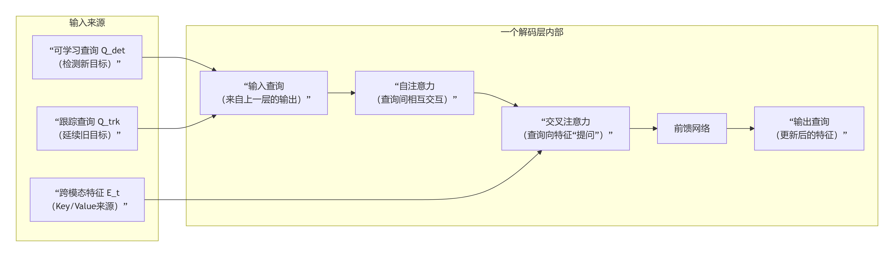
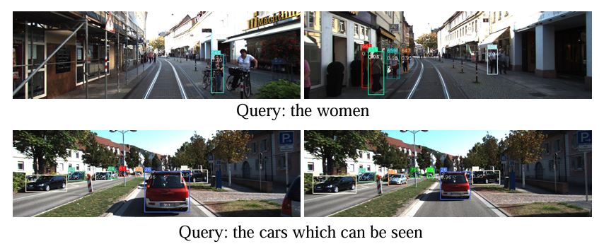

[论文阅读] RMOT

概览
**时间：**CVPR2023
贡献：提出指代多目标跟踪任务（referring multi-object tracking, RMOT），并基于 KITTI 构建了数据集 Refer-KITTI 用于推进工作，同时基于 Transformer 开发了一个模型架构 TransRMOT 以在线方式解决 RMOT 任务。

研究背景
将 NLP 融入场景感知的指代理解逐渐发展，但是现有的数据集和基准测试无法在多个指代目标和时间状态变化的情况下提供准确的评估：
- 现有数据集的每个表述通常对应一个目标，而现实世界往往指代多个对象。
- 给定的表述可能只描述了视频指代任务的部分帧，导致对应关系不准确。例如对于指代"the car which is turning"，标注可能只存在于车辆“正在转弯”的那几帧；而当车转完弯进入直行状态时，标注就应该停止了。
模型架构

TransRMOT 是一个在线跨模态跟踪器，包括四个基本部分：特征提取器、跨模态编码器、解码器和指代头。
在目标跟踪领域，在线（online）指的是跟踪器在处理视频时，只能利用当前帧和过去帧的信息进行实时推断，无法预先获取未来帧的信息。与离线（offline）利用完整的视频帧相对。前者模拟现实，后者事后分析。
-
特征提取器：给定一个 帧的视频，使用 CNN 骨干模型提取逐帧的金字塔特征图，例如第 帧的特征为 ，其中 分别表示第 层特征图的通道数、高度和宽度。同时采用一个预训练的语言模型将包含 个单词的文本嵌入到二维向量 ，其中 表示词向量的特征维度。
特征金字塔是一种在深度神经网络中构建多尺度特征表示的结构，通过融合不同层级的特征来增强模型对多尺度目标的感知能力。
-
跨模态编码器：跨模态编码器负责接收并融合视觉和语言特征。先通过早期融合模块整合视觉和语言特征，随后经过可变形编码器层得到跨模态嵌入。
常见策略是将两类特征拼接并输入编码器，通过自注意力（如MDETR）建模密集连接。然而，由于图像的标记数量庞大，自注意力的计算成本巨大，因此这里在编码前先早期融合两类特征。
-
早期融合模块：

对于每一帧，给定第 层特征图 ，使用 的卷积将其通道数减少到 ，并将其展平为 2D 张量 。为了保持与视觉特征相同的通道数，语言特征使用全连接层投影（线性投影）到 。三个独立的全连接层将视觉和语言特征转换为 ：
其中 是权重， 和 分别表示视觉和语言特征的位置嵌入。随后运用注意力机制，对 和 进行矩阵乘积运算，并使用生成的相似度矩阵来加权语言特征，即 ，这里 为特征维度。然后将原始视觉特征与视觉条件下的语言特征相加，得到融合特征 ：
-
可变形编码器层：在融合两种模态之后，使用一堆可变形编码器层来促进跨模态交互：
其中 是编码的跨模态嵌入，将用于后续解码器中的指代预测。
-
-
解码器：

为了关联相邻帧之间的对象，利用来自上一帧的解码器嵌入，该嵌入经过筛选后被更新为当前帧的跟踪查询，以追踪同一实例。对于当前帧中新出现的对象，使用 DETR 中的原始查询，作为检测查询。
记 表3示第 帧的解码器嵌入，这 个嵌入的一部分对应于空对象或推出对象，因此过滤掉它们，仅保留 个真实嵌入；随后通过注意力机制和前馈网络（FFN），根据它们的类别得分进一步转换为第 帧的跟踪查询，即 。 令 表示检测查询，它被随机初始化以检测新出现的对象。这两种查询被连接在一起并输入到解码器中，以生成目标表示 ：
其中输出嵌入的数量为 ，包括跟踪对象和检测对象。

-
指代头：在一组解码器层之后，我们在解码器的顶部添加一个指代头。指代头包括类别分支、框分支和指代分支。类别分支是一个线性投影，它输出一个二元概率，指示输出嵌入表示的是真实对象还是空对象。框分支是一个三层前馈网络，除了最后一层外，都使用 ReLU 激活函数。它预测所有可见实例的框位置。另一个线性投影充当指代分支，以产生具有二元值的指代分数。它指的是实例与表达式匹配的可能性。
局限性
论文给出了几个失败案例。
第一个案例是一些细粒度的对象特征（例如，人的性别）没有被准确捕捉，从而阻碍了检测性能。为了避免这种情况，可以共同探索自顶向下的解决方案（即，先检测后融合的方法），以更多地关注对象区域的细粒度特征。第二个案例是 ID 切换问题，这是由长时间遮挡引起的，并降低了跟踪性能。为了解决这个问题，对象表示可以在未来的工作中使用记忆机制来保持更长的时间以进行长期关联。
